Village des Vents Contraires
Programmation pour petits et grands
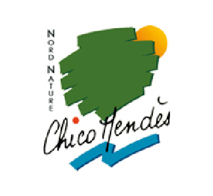
Nord Nature Chico Mendès
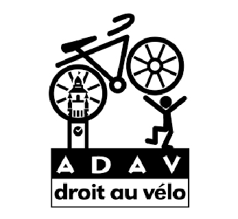
ADAV
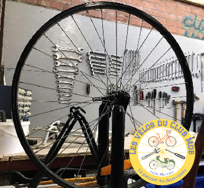
Les vélos du Club Mob
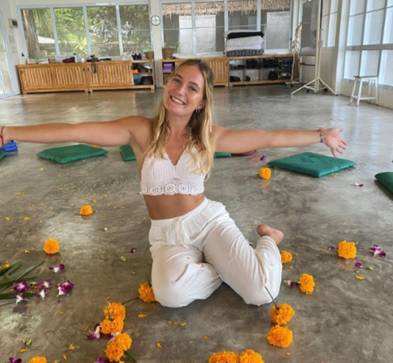
Yoga Beer avec Emma
Mais viens aussi découvrir l’univers de l’artiste Mandaline, confectionner tes produits cosmétiques responsables avec Coup de pouce ou encore dévoiler tes talents de poète avec 3cm.
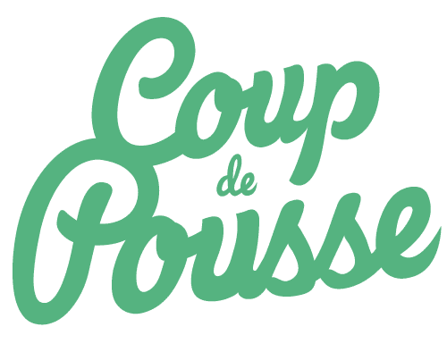
Coup de Pousse
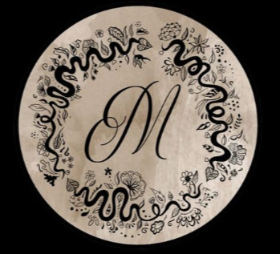
Artiste Mandaline
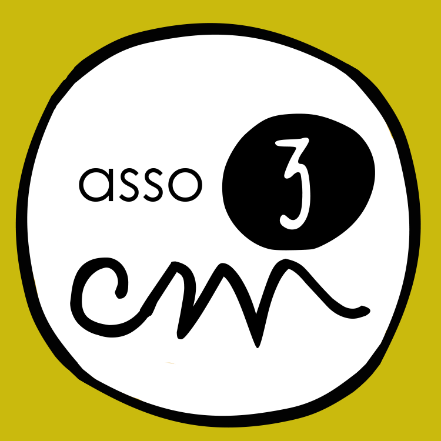
Asso 3cm
Oublie le temps qui passe en jouant avec les Dés Capsulés toute l’après-midi au coin du bar du Village ou avec les jeux en bois traditionnels de Wellouej.
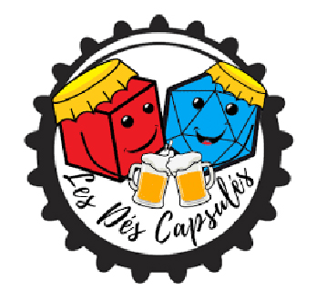
Les Dés Capsulés
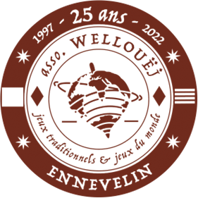
wellouej
Reste conscient de nos responsabilités de citoyen.ne envers la planète avec les ateliers participatifs de sensibilisation de la mres, de la MEL et du cerdd. Rencontre également Simone s’éveille pour un moment d’échange et de partage pour toutes tes concitoyen.nes et leur belle diversité.
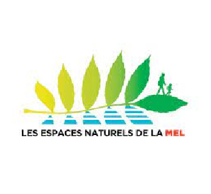
Espaces Naturels Métropolitains - MEL
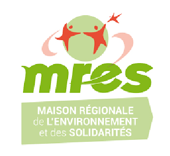
MRES
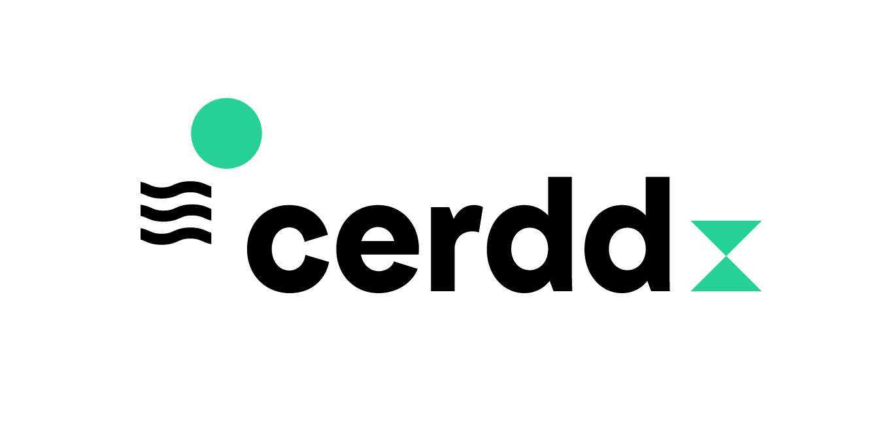
CERDD
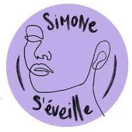
Simone s'eveille
Laisse-toi aussi envoûter par la programmation culturelle concoctée par nos soins et l’aide précieuse des compagnies Vent du Riatt, Momos, Alma Alma et du groupe Minor Strings. Au programme : théâtre de rue, déambulations clownesques, théâtre de masque et jazz manouche.
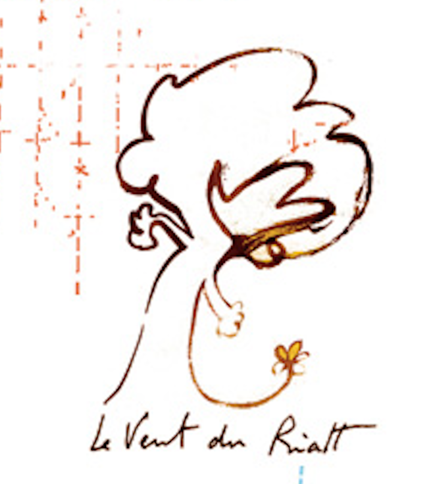
Vent du Riatt
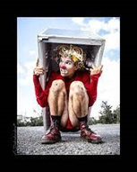
Momos
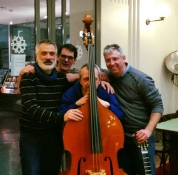
Minor Strings
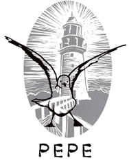
Alma Alma